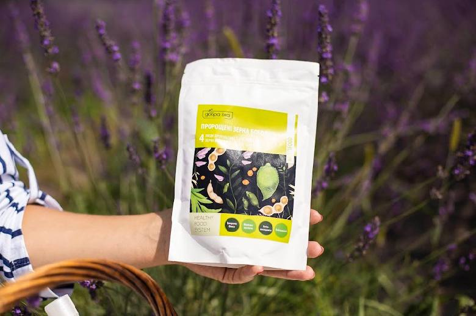

Amazing Goodfood
Sikora BeautyМи - це білок. Ми - це 20 амінокислот І яким би не був розумний наш організм, а 8 видів амінокислот він не виробляє і без них нормальне функціонування організму неможливе. Білок ми можемо отримати з продуктів як тваринного так і рослинного походження. Якщо говорити про рослинний білок- це насамперед бобові. Але, повноцінний білок, тобто той який містить повний набір амінокислот ( в тому числі і тих 8 не замінних) має тільки СОЯ, дуже якісна соя. Для засвоєння рослинного білка організм витрачає багато енергії та часу на розщеплення оболонки бобових і поки триває цей процес організм не встигає засвоїти усі поживні речовини в тому числі я білок і додається здуття кишківника. Це суттєвий недолік вживання бобових. Саме тому варто вживати харчові дієтичні сертифіковані добавки- Пророщені зерна злакових та бобових де міститься повноцінний білок в чистому вигляді з повним набором амінокислот. Пророщені зерна бобових (Соя, Нут, Сочевиця, Маш) - це відбірні культури,виготовлені за спеціальною запатентованою технологією (від вирощення до упакування) і які містять високу концентрацію усіх поживних речовин. Про білок можу розказати ще багато, але вже в наступних дописах, якщо цікаво- дайте знати у коментарях.💜
Goodfood Sikora
Біологічно - активні речовини - це насамперед вітаміни, які життєво необхідні організму та виконують важливі функції: Сприяють обміну речовин, полегшують засвоєння продуктів харчування та надходять у шкіру з кров’ю та підвищують її тонус